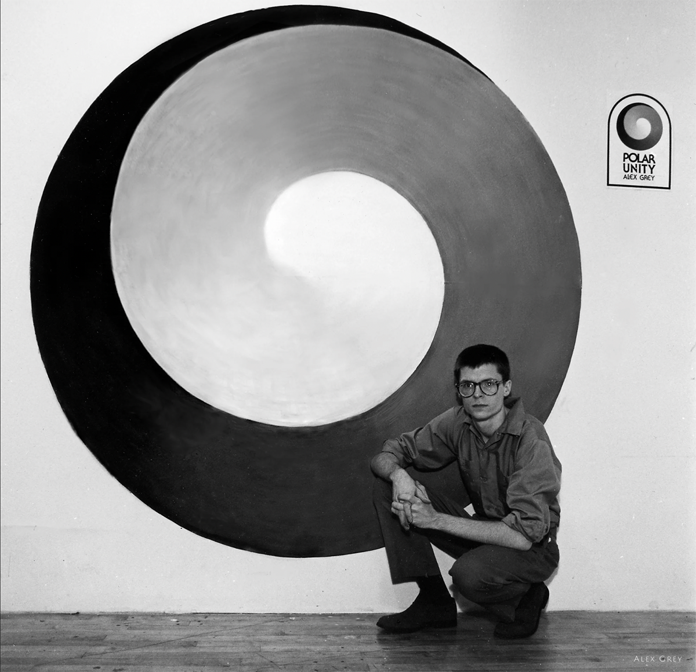
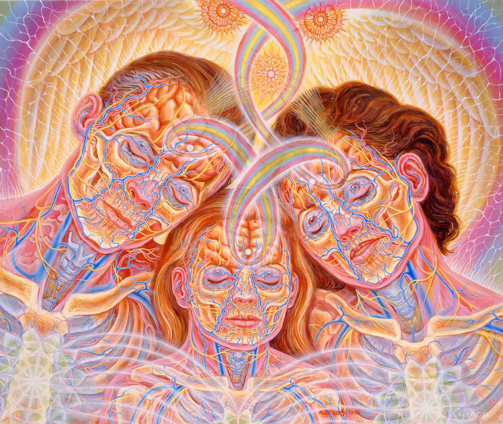
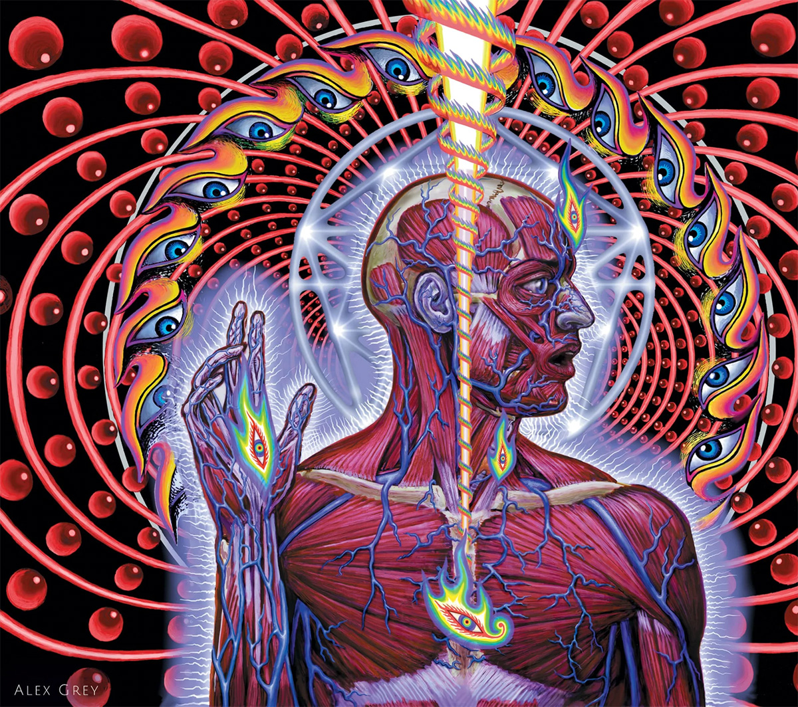

Start with your browser at the smallest width.
Timeline elements will appear as the screen gets wider.
Adolescence

Alex Grey was born on November 29, 1953, in Columbus, Ohio. At age
seventeen, Alex was granted a full scholarship to Columbus College of
Art and Design. His artwork and performance pieces would focus on
polarity, such as the black and white gradient in the piece shown here,
titled "Polar Unity Spiral".
Career
From 1975-80, Alex worked in the Anatomy Department at Harvard Medical
School. He created exhibits for the Anatomical Museum and prepared
cadavers for dissection by medical students. Anatomy is a prominent
theme in Alex's art.


In 1999 Alex met Adam Jones, lead guitarist for Tool, beginning a
decades-long association with the bands intense rock music. Alex is the
main designer for the bands album art as well as numerous stage designs
and animations. Alex's association with Tool was arguably the biggest
cause for his exposure and growth in his fan base.
Legacy
Alex Grey continues to have a blossoming career. His fan base continues
to support him from around the entire globe. He has hosted Ted Talks,
displayed art at Art Basel, continued his work with the band Tool as
well as maintain his personal brand. Currently, his focus is on
maintaining the "Chapel of Sacred Mirrors", an art oriented temple based
in New York. He will go down in history as one of the key figures in
modern Visionary Art.


{kind=link}
{kind=link}
{kind=link}
{kind=link}